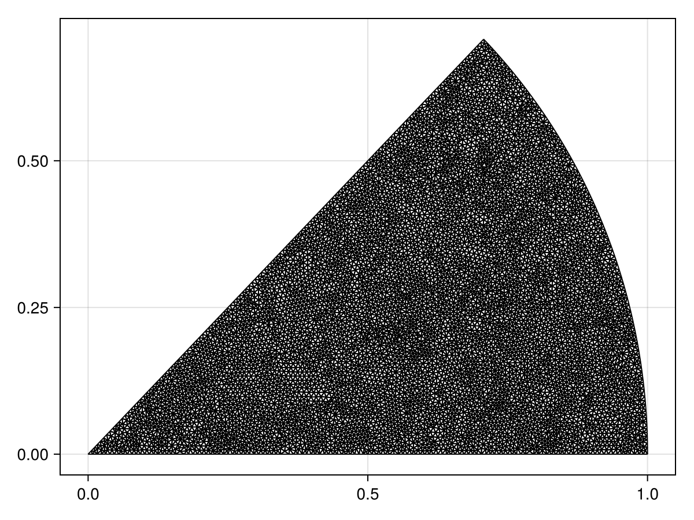

Diffusion Equation in a Wedge with Mixed Boundary Conditions
In this example, we consider a diffusion equation on a wedge with angle $\alpha$ and mixed boundary conditions:
\[\begin{equation*} \begin{aligned} \pdv{u(r, \theta, t)}{t} &= \grad^2u(r,\theta,t), & 0<r<1,\,0<\theta<\alpha,\,t>0,\\[6pt] \pdv{u(r, 0, t)}{\theta} & = 0 & 0<r<1,\,t>0,\\[6pt] u(1, \theta, t) &= 0 & 0<\theta<\alpha,\,t>0,\\[6pt] \pdv{u(r,\alpha,t)}{\theta} & = 0 & 0<\theta<\alpha,\,t>0,\\[6pt] u(r, \theta, 0) &= f(r,\theta) & 0<r<1,\,0<\theta<\alpha, \end{aligned} \end{equation*}\]
where we take $f(r,\theta) = 1-r$ and $\alpha=\pi/4$.
Note that the PDE is provided in polar form, but Cartesian coordinates are assumed for the operators in our code. The conversion is easy, noting that the two Neumann conditions are just equations of the form $\grad u \vdot \vu n = 0$. Moreover, although the right-hand side of the PDE is given as a Laplacian, recall that $\grad^2 = \div\grad$, so we can write the PDE as $\partial u/\partial t + \div \vb q = 0$, where $\vb q = -\grad u$.
Let us now setup the problem. To define the geometry, we need to be careful that the Triangulation recognises that we need to split the boundary into three parts, one part for each boundary condition. This is accomplished by providing a single vector for each part of the boundary as follows (and as described in DelaunayTriangulation.jl's documentation), where we also refine! the mesh to get a better mesh. For the arc, we use the CircularArc so that the mesh knows that it is triangulating a certain arc in that area.
using DelaunayTriangulation, FiniteVolumeMethod, ElasticArrays
α = π / 4
points = [(0.0, 0.0), (1.0, 0.0), (cos(α), sin(α))]
bottom_edge = [1, 2]
arc = CircularArc((1.0, 0.0), (cos(α), sin(α)), (0.0, 0.0))
upper_edge = [3, 1]
boundary_nodes = [bottom_edge, [arc], upper_edge]
tri = triangulate(points; boundary_nodes)
A = get_area(tri)
refine!(tri; max_area=1e-4A)
mesh = FVMGeometry(tri)FVMGeometry with 8253 control volumes, 16140 triangles, and 24392 edgesThis is the mesh we've constructed.
using CairoMakie
fig, ax, sc = triplot(tri)
fig
To confirm that the boundary is now in three parts, see:
get_boundary_nodes(tri)3-element Vector{Vector{Int64}}:
[1, 6668, 2658, 6507, 894, 2662, 968, 2652, 458, 2607 … 4593, 204, 4627, 2686, 4793, 226, 5700, 2689, 6220, 2]
[2, 5691, 6401, 285, 7328, 2678, 6161, 211, 6500, 5667 … 3035, 6138, 321, 7079, 3029, 6908, 330, 3852, 3836, 3]
[3, 3842, 3673, 3839, 323, 3847, 3596, 3850, 308, 3604 … 5959, 457, 4694, 966, 5264, 893, 6257, 2657, 6667, 1]We now need to define the boundary conditions. For this, we need to provide Tuples, where the ith element of the Tuples refers to the ith part of the boundary. The boundary conditions are thus:
lower_bc = arc_bc = upper_bc = (x, y, t, u, p) -> zero(u)
types = (Neumann, Dirichlet, Neumann)
BCs = BoundaryConditions(mesh, (lower_bc, arc_bc, upper_bc), types)BoundaryConditions with 3 boundary conditions with types (Neumann, Dirichlet, Neumann)Now we can define the PDE. We use the reaction-diffusion formulation, specifying the diffusion function as a constant.
f = (x, y) -> 1 - sqrt(x^2 + y^2)
D = (x, y, t, u, p) -> one(u)
initial_condition = [f(x, y) for (x, y) in DelaunayTriangulation.each_point(tri)]
final_time = 0.1
prob = FVMProblem(mesh, BCs; diffusion_function=D, initial_condition, final_time)FVMProblem with 8253 nodes and time span (0.0, 0.1)If you did want to use the flux formulation, you would need to provide
flux = (x, y, t, α, β, γ, p) -> (-α, -β)#9 (generic function with 1 method)which replaces u with αx + βy + γ so that we approximate $\grad u$ by $(\alpha,\beta)^{\mkern-1.5mu\mathsf{T}}$, and the negative is needed since $\vb q = -\grad u$.
We now solve the problem. We provide the solver for this problem. In my experience, I've found that TRBDF2(linsolve=KLUFactorization()) typically has the best performance for these problems.
using OrdinaryDiffEq, LinearSolve
sol = solve(prob, TRBDF2(linsolve=KLUFactorization()), saveat=0.01, parallel=Val(false))retcode: Success
Interpolation: 1st order linear
t: 11-element Vector{Float64}:
0.0
0.01
0.02
0.03
0.04
0.05
0.06
0.07
0.08
0.09
0.1
u: 11-element Vector{Vector{Float64}}:
[1.0, 0.0, 0.0, 0.0, 0.0, 0.0, 0.5, 0.5, 0.2742608203909225, 0.25 … 0.7011245136743542, 0.37263184965492724, 0.4386924936609956, 0.02661638979554426, 0.44719106902124617, 0.2268257839376563, 0.17888182170626332, 0.14847890497049354, 0.21292502791625068, 0.4049644068299275]
[0.8217345296729174, 0.0, 0.0, 0.0, 0.0, 0.0, 0.4795253483217933, 0.47952203945733113, 0.2742608203909225, 0.236803003423616 … 0.6650572164173462, 0.3564941263248225, 0.42056586666513274, 0.02373635199006014, 0.4287704654572299, 0.21417336464340725, 0.16749549395168237, 0.13809064123601583, 0.20061441148460282, 0.3879083824834437]
[0.7468154098277052, 0.0, 0.0, 0.0, 0.0, 0.0, 0.45792650412187075, 0.45792350583278885, 0.2742608203909225, 0.22469020387745017 … 0.626255816200407, 0.3402000050007535, 0.40179163062830764, 0.022272647378450527, 0.40964180598384, 0.202923639586503, 0.15821162951143505, 0.1301974040127415, 0.1899073210088768, 0.3704522262610319]
[0.6920081908826956, 0.0, 0.0, 0.0, 0.0, 0.0, 0.43544962387481984, 0.4354469526421231, 0.2742608203909225, 0.21363112595305744 … 0.5882690109827229, 0.32397308995858665, 0.38255583075041083, 0.021121666748613224, 0.389988318602931, 0.19285953932045338, 0.15024425210994355, 0.12357910915569843, 0.18044605267791602, 0.3527975113769834]
[0.6446028843531814, 0.0, 0.0, 0.0, 0.0, 0.0, 0.41292547766217275, 0.4129230771825429, 0.2742608203909225, 0.2031410073860061 … 0.5529337357018564, 0.3079750197147669, 0.3633247742601416, 0.020068607470994034, 0.37031969487616967, 0.18337642208530322, 0.14282854832904293, 0.1174638656570258, 0.17156440113210486, 0.3352513616497631]
[0.6029821426221258, 0.0, 0.0, 0.0, 0.0, 0.0, 0.3907767297115979, 0.3907745272192948, 0.27426082039092253, 0.1930671514168735 … 0.5201809616244114, 0.2922819718143697, 0.3443604618829829, 0.019082664154754087, 0.3509219979981267, 0.17430712650478436, 0.1357914157251357, 0.11168556930688348, 0.163090518415248, 0.31797935509717656]
[0.5651133817624638, 0.0, 0.0, 0.0, 0.0, 0.0, 0.3694918167734075, 0.3694897804048227, 0.2742608203909225, 0.18330858769613248 … 0.489539331697267, 0.2770703617363639, 0.3260367320139619, 0.01813485668402324, 0.3321910273561048, 0.16552892985786336, 0.12899339401848528, 0.1061100166473161, 0.15489312996896357, 0.3012576894852066]
[0.5302769011972832, 0.0, 0.0, 0.0, 0.0, 0.0, 0.34917197626844254, 0.34917008728281396, 0.2742608203909225, 0.17385934277376994 … 0.4608324225067123, 0.2624017369064732, 0.30844873657186517, 0.017218147600647594, 0.31422468160858885, 0.15702767738728515, 0.12241033519218737, 0.10071175216096544, 0.14695417805203995, 0.28516642868948955]
[0.4982439189417157, 0.0, 0.0, 0.0, 0.0, 0.0, 0.3298179628412014, 0.32981620436194165, 0.2742608203909225, 0.1647315664312839 … 0.4339795897278636, 0.24829598331087735, 0.2916109053292648, 0.01633238704699193, 0.2970360025771055, 0.14881300324917973, 0.11604725936085304, 0.0954936767581697, 0.13928183766800467, 0.26972391896123477]
[0.46878565301089326, 0.0, 0.0, 0.0, 0.0, 0.0, 0.31143053113618185, 0.31142888815087877, 0.2742608203909225, 0.1559374084501724 … 0.4089001890358368, 0.23477298693575585, 0.2755376680587332, 0.015477425165420994, 0.28063803208318144, 0.14089454159967713, 0.10990918663909337, 0.09045869134926711, 0.13188428382038522, 0.25494850655165124]
[0.44167332141994775, 0.0, 0.0, 0.0, 0.0, 0.0, 0.2940104357978823, 0.2940088951582983, 0.2742608203909225, 0.14748901861193342 … 0.38551357610574805, 0.22185263376728834, 0.2602434545328424, 0.014653112098299559, 0.26504381194834337, 0.1332819265949073, 0.10400113714151943, 0.08560969684459585, 0.12476969151270915, 0.24085853771194826]using CairoMakie
fig = Figure(fontsize=38)
for (i, j) in zip(1:3, (1, 6, 11))
local ax
ax = Axis(fig[1, i], width=600, height=600,
xlabel="x", ylabel="y",
title="t = $(sol.t[j])",
titlealign=:left)
tricontourf!(ax, tri, sol.u[j], levels=0:0.01:1, colormap=:matter)
tightlimits!(ax)
end
resize_to_layout!(fig)
fig
local axJust the code
An uncommented version of this example is given below. You can view the source code for this file here.
using DelaunayTriangulation, FiniteVolumeMethod, ElasticArrays
α = π / 4
points = [(0.0, 0.0), (1.0, 0.0), (cos(α), sin(α))]
bottom_edge = [1, 2]
arc = CircularArc((1.0, 0.0), (cos(α), sin(α)), (0.0, 0.0))
upper_edge = [3, 1]
boundary_nodes = [bottom_edge, [arc], upper_edge]
tri = triangulate(points; boundary_nodes)
A = get_area(tri)
refine!(tri; max_area=1e-4A)
mesh = FVMGeometry(tri)
using CairoMakie
fig, ax, sc = triplot(tri)
fig
get_boundary_nodes(tri)
lower_bc = arc_bc = upper_bc = (x, y, t, u, p) -> zero(u)
types = (Neumann, Dirichlet, Neumann)
BCs = BoundaryConditions(mesh, (lower_bc, arc_bc, upper_bc), types)
f = (x, y) -> 1 - sqrt(x^2 + y^2)
D = (x, y, t, u, p) -> one(u)
initial_condition = [f(x, y) for (x, y) in DelaunayTriangulation.each_point(tri)]
final_time = 0.1
prob = FVMProblem(mesh, BCs; diffusion_function=D, initial_condition, final_time)
flux = (x, y, t, α, β, γ, p) -> (-α, -β)
using OrdinaryDiffEq, LinearSolve
sol = solve(prob, TRBDF2(linsolve=KLUFactorization()), saveat=0.01, parallel=Val(false))
using CairoMakie
fig = Figure(fontsize=38)
for (i, j) in zip(1:3, (1, 6, 11))
local ax
ax = Axis(fig[1, i], width=600, height=600,
xlabel="x", ylabel="y",
title="t = $(sol.t[j])",
titlealign=:left)
tricontourf!(ax, tri, sol.u[j], levels=0:0.01:1, colormap=:matter)
tightlimits!(ax)
end
resize_to_layout!(fig)
fig
local axThis page was generated using Literate.jl.